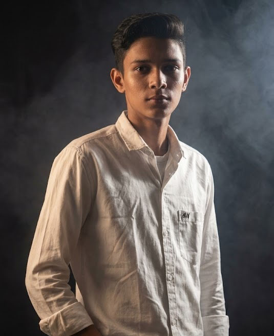

Hello, I'm Paras
Applied AI & Data Science Architect
Building robust, intelligent applications at the intersection of deep neural analytics, mathematical modeling, and production-grade software engineering.
The Architecture of Thought
My foundation lies in pure, unyielding logic. Forged in rigorous residential academic environments and refined in competitive algorithmic arenas, I don't just use AI tools—I study their core mathematical anatomy.
Currently pursuing my BS in Applied AI & Data Science at IIT Jodhpur, I build systems that parse chaos into actionable intelligence. I believe in writing clean code and backing up every skill with a real, verifiable project.

The Educational Pipeline
Indian Institute of Technology Jodhpur
BS in Applied AI & Data Science
Engineering intelligent ecosystems. Currently focusing on deep learning frameworks, scalable data pipelines, automated machine learning (MLOps), and advanced statistical algorithms in India's premier tech hub.


ALLEN Sikar & S.G.R.
Class 12th Preparation
Immersed in intense algorithmic training, advanced calculus, and high-pressure problem solving. This competitive crucible refined my execution speed and complex analytical patterns.
Jawahar Navodaya Vidyalaya
Classes 6th - 10th(JNV Fazilka) 11th (JNV Ropar)(Punjab)
A highly disciplined residential environment that forged my foundational logic, core mathematical reasoning, and structural analytical capabilities.

Experience & Activities
Self Projects
Building AI-powered applications, data dashboards, and software utilities from scratch to solve real problems.
Open Source
Actively contributing code, fixing bugs, and improving documentation in public GitHub repositories.
Hackathons
Participating in intensive coding sprints to rapid-prototype AI tools under strict time constraints.
Academic Research
Engaging deeply with IIT Jodhpur curriculum data science projects and statistical modeling labs.
Tech Stack Matrix
Languages
AI & Data
Tools
Engineered Systems

AI Resume Analyzer
An intelligent application that evaluates resumes against job descriptions. It uses natural language processing to extract key candidate metrics, identify missing skills, and provide a quantitative match score.
- Parses PDF resumes accurately
- Generates gap analysis reports
- Interactive data dashboard
Curatly
A content curation Android application designed to intelligently structure scattered web data into isolated custom repositories for quick access.
GitHub Log
Consistent contributions, open-source activity, and meticulous project documentation. My GitHub reflects my daily coding and deployment habits.
Follow @parasbishnoi029Certifications
Machine Learning Foundation
Core curriculum track completed.
Data Science Core
Data analysis and structuring methodologies.
Achievements
IIT Jodhpur Academic Standing
Maintained consistent 8.75 CGPA in rigorous Applied AI pipelines.
Hackathon Participant
Built rapid prototypes and deployed ML models within tight deadlines.
Writings & Thoughts
How I built AI Resume Analyzer
Breaking down the NLP architecture and data structuring behind my featured project.
Learning Deep Learning
My roadmap, struggles, and breakthroughs while studying advanced neural networks.
Using Gemini in Android
Integrating modern LLM APIs directly into native Android mobile applications.